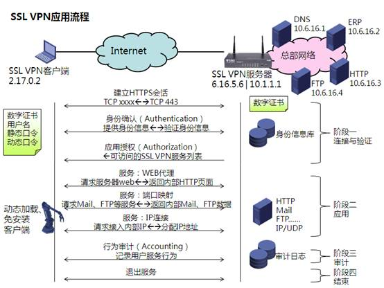
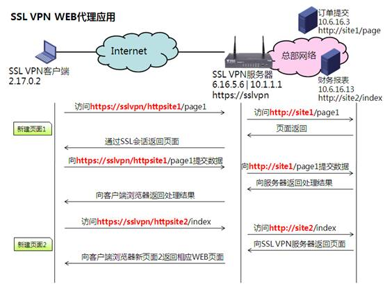
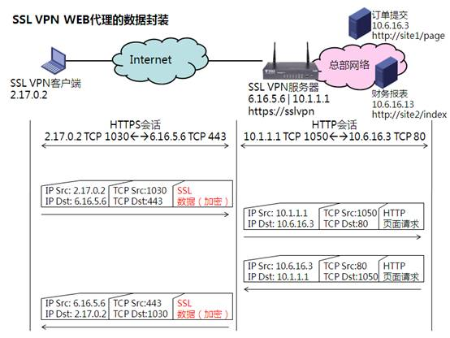
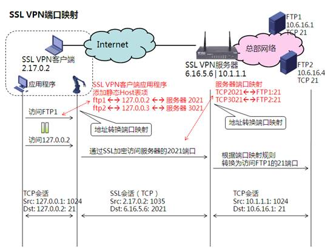
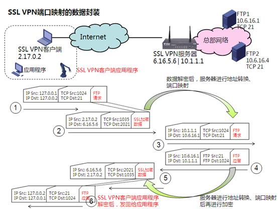
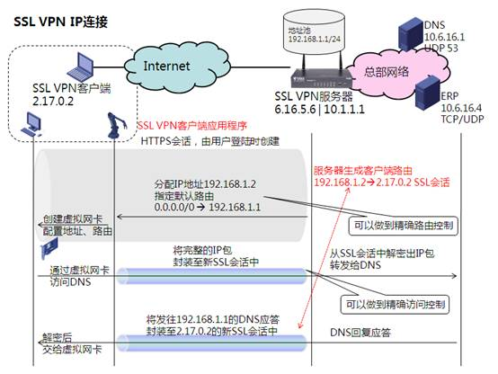
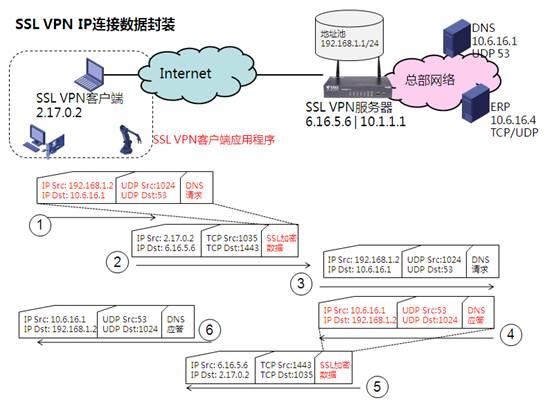

SSL VPN
SSL VPN作为远程接入型的VPN，已经具备非常广阔的前景，它的主要适应场景是取代L2TP Over IPSec，但功能要比L2TP Over IPSec更丰富，方案也更加灵活。
SSL VPN简介
何谓SSL VPN，首先要从SSL谈起，使用网络不能不提的是各个网站，浏览网站使用浏览器，网络上传送网页的协议叫HTTP，它是明文传播的，传播内容可以被黑客读取。而SSL全名叫Secure Session Layer（安全会话层），其最初目的是给HTTP加密使用的安全套件，使用SSL的HTTP，也就摇身一变成了HTTPS，端口也从HTTP的80变成了443。由于HTTPS具备安全性，也具备传输数据的能力，也就被研究VPN技术的专家盯上了，觉得HTTPS可以用于组建VPN方案，于是乎SSL VPN技术就呼之欲出了。经过多年的发展，SSL版本发展到了3.0，也被标准组织采纳为TLS（Transport Layer Security传输层安全） 1.0之中，所以SSL VPN也叫TLS VPN。下面是SSL 与SSL VPN、TLS的区别：
SSL：单纯的实现对某些TCP应用的保护，如HTTPS和SFTP；SSL VPN：利用TCP的传输作用以及SSL对TCP会话的保护，实现VPN业务，被保护的VPN业务可以是TCP的、也可以UDP，纯IP的应用；TLS：在SSL上进行扩展，能够直接实现对UDP应用的保护，这也是传输层安全的最佳注释。
SSL VPN的使用场景

L2TP实现的是远程接入VPN，而IPSec为L2TP提供安全保护，这种应用已经非常成熟，但属于两个协议的生硬组合，在方案上不是特别灵活。而SSL VPN是天然的安全远程接入，在方案上，特别是权限控制、应用粒度上有独到之处，成为目前远程接入领域的香饽饽，目前已经超越了技术范畴，而成为一个安全网络服务框架。
SSL VPN应用
SSL VPN应用整体流程

SSL VPN最常见的入口还是网页，所以推广起来特别方便：
使用者只需要记住VPN的网站（通常是HTTPS），用浏览器打开该网站；
输入使用者的身份信息，身份信息可以是用户名、数字证书（如USB-Key）、静态口令、动态口令的至尊组合，确保身份不泄露、不假冒；
选择服务种类，其中WEB代理是最为简单的应用，也是控制粒度最细的SSL VPN应用，可以精确地控制每个链接；
端口映射是粒度仅次于WEB代理的应用，它通过TCP端口映射的方式（原理上类似于NAT内部服务器应用），为使用者提供远程接入TCP的服务，它需要专门的、与服务器配套的SSL VPN客户端程序帮忙；
IP连接是SSL VPN中粒度最粗的服务，但也是使用最广泛的，它实现了类似于L2TP的特性，所有客户端都可以从服务器获得一个VPN地址，然后直接访问内部服务器，它也需要专门的SSL VPN客户端程序帮忙；
SSL VPN由于处在TCP层，所以可以进行丰富的业务控制，如行为审计，可以记录每名用户的所有操作，为更好地管理VPN提供了有效统计数据；
当使用者退出SSL VPN登陆页面时，所有上述安全会话会统统释放。
以上7个步骤可以划分为三个阶段：阶段一是连接与验证、阶段二是VPN应用、阶段三是审计与退出。 连接与验证、审计与退出都是统一流程，也比较简单。
Web代理

由于SSL是封装在TCP上的，穿越NAT不是问题，所以在示例中客户端使用公网地址进行介绍：
假设SSL VPN的WEB站点的互联网域名是https://sslvpn，该WEB站点对应的主机则是SSL VPN服务器；
使用者登陆SSL VPN的WEB页面后，WEB代理一栏会有许多链接，如内部财务报表、订单提交等内部网站；
假设“订单提交”网站在单位内部私有URL是http://site1/page，那么在SSL VPN服务器上的订单提交链接URL则会进行相应的修改，变成https://sslvpn/httpsite1/pate，相当于SSL VPN站点的内部链接；
使用者点击“订单提交”链接后，会新建一个浏览器窗口，打开链接https://sslvpn/httpsite1/page，也就是说对于使用者而言，订单提交像是SSL VPN站点的一个链接，而非另外一个站点，所有的访问都终结在SSL VPN站点；
SSL VPN站点的所有者SSL VPN服务器在接收到使用者对https://sslvpn/httpsite1/page的页面请求后，SSL VPN服务器会做WEB代理的工作，即以内部地址10.1.1.1向真正的“订单提交”站点10.6.16.3访问页面http://site1/page；
可以发现整个页面访问是由使用者与服务器之间的HTTPS会话、服务器与“订单提交”站点的HTTP会话连接而成的，服务器在这个访问中起的是WEB代理作用，因为在“订单提交”站点看来，访问者IP是服务器，而不是最终用户IP；
而使用者访问另外一个站点“财务报表”，也是类似过程。
WEB代理因为原理简单，实现起来较为容易，因为传统的WEB Proxy代理是两段HTTP会话的衔接，而SSL VPN的WEB代理则把用户与服务器的连接把HTTP换成了HTTPS、并对网站的URL进行了替换而已，从图中我们可以看到红色部分即为URL的替换。
SSL VPN web代理的数据封装

从这张封装原理图，我们可以比较清楚地看到HTTPS与HTTP会话在这个访问过程中的衔接。可能有人会问，让“订单提交”站点直接在互联网提供HTTPS服务，直接用一个HTTPS会话不是更好，原理上当然更好，但是有更多的现实问题：
直接在互联网提供HTTPS服务，需要一个互联网地址和公共域名，这两样都是要花钱申请的，使用SSL VPN统一接入，这么多内部站点只需要一个公网地址、一个公网域名，多划算；
订单提交真的需要开放到互联网吗？订单提交都是公司内部业务，访问量也不大，直接开放到互联网并不能有更多的提速效果；
开放到互联网怎么保证安全，财务报表等信息都是公司机密，老老实实放在内网，前面通过SSL VPN服务器挡着，即使有攻击也只是攻击SSL VPN服务器，内网服务器还是很安全的。
综上所述对于一些内部站点，使用SSL VPN还是相当有好处的，特别是在拥有一款强大的SSL VPN服务器的时候。
端口映射
刚才讲的是WEB代理，对于一些内部服务器并不是WEB站点，那WEB代理还能使用吗？不能使用了，比如内部站点是FTP应用，那么访问不可能由HTTPS会话和FTP会话衔接而成，SSL VPN必须想其余办法。由于SSL只能封装在TCP之上，所以端口映射服务器只能针对内部的TCP应用，如FTP。

在端口映射中，SSL VPN的使用者会从SSL VPN页面自动加载一个客户端程序，我们姑且就叫它SSL VPN客户端程序吧，它是怎么使端口映射工作的呢，我们假设内部有两个FTP服务器，一个叫FTP1，内部地址10.6.16.1，另一个是FTP2，内部地址10.6.16.4，都是监听TCP 21端口：
SSL VPN服务器为这两个内部服务器做了端口映射，TCP 2021端口映射到FTP1的TCP 21，3021则映射到FTP2；
SSL VPN服务器会让使用者PC自动加载SSL VPN客户端程序，并根据这两个映射生成两个静态host映射表项，告诉使用者PC访问FTP1其实就是访问127.0.0.2，访问FTP2就是访问127.0.0.3，127.0.0.0/8称为环回地址，及该地址只能在PC内部使用，不可能被发出到PC之外，那么SSL VPN客户端程序就监听这两个内部地址；
使用者访问FTP1，其实访问的是TCP 127.0.0.2:21，所有数据都会被SSL VPN客户端程序监听，客户端程序会进行代理，变成访问服务器TCP 6.16.5.6:2021，该TCP访问会使用SSL进行加密；
大家可能会问，为何需要个客户端程序进行代理呢，使用者的应用程序不能直接和SSL VPN服务器建立SSL会话吗？这个问题很好，使用者的应用程序的确无法直接建立SSL会话，所以使用客户端程序代劳，这种方式可以让所有TCP应用都能够享用SSL VPN服务；
服务器接收到SSL加密的请求后，首先会进行解密，然后根据端口映射，会向内部FTP1站点TCP 10.6.16.1:21发起访问；
反向转发以及访问FTP2类似。
我们可以发现这种端口映射使整个访问过程由三段会话组成：
使用者应用程序与SSL VPN客户端程序的普通TCP会话 SSL VPN客户端程序与服务器的SSL会话 服务器与内部站点的普通TCP会话。
SSL VPN端口映射的数据封装

从这张图可以看出更详细的数据封装过程以及会话衔接过程，使用SSL VPN服务器进行端口映射的好处与WEB代理类似，可以牺牲SSL VPN服务器，保护内部服务器。
IP连接
WEB代理是专门针对WEB应用的，端口映射则受制于SSL只支持TCP应用，如果使用者要任意访问一个内部服务器的任意协议、端口，该如何是好呢？IP连接应运而生，IP连接可以完美地替代L2TP这种传统意义上的VPN：虚拟连接、内部地址、路由互联。

我们从上图来解释一下IP连接的原理：
用户登陆SSL VPN页面后，会建立HTTPS会话，服务器通过这个会话给用户自动加载SSL VPN客户端程序；
此时的SSL VPN客户端程序的目的是给用户PC创建一个虚拟网卡，以实现类似于L2TP那种到客户总部网络的VPN连接；
虚拟网卡创建好后，服务器会给该用户从地址池中取一个地址分配给该用户，同时下发路由、DNS等信息，服务器针对该地址池也会有一个服务器地址192.168.1.1，作为所有客户端程序虚拟网卡的网关；
此时SSL VPN客户端程序与服务器之间会建立一个全新的SSL会话，专门用来传输虚拟网卡与服务器之间的流量；
假设用户要访问DNS 10.6.16.1，根据路由的关系，PC会通过虚拟网卡将DNS请求（源192.168.1.2目的10.6.16.1）转发给SSL VPN服务器192.168.1.1；
PC上的SSL VPN客户端程序会将虚拟网卡发出的IP包封装至新的SSL会话中，通过互联网传送到服务器；
服务器进行解密，解封装后发现IP目的地址是10.6.16.1，那么就转发给DNS；
反向过程以及访问ERP服务器10.6.16.4与此类似。
SSL VPN IP连接数据封装
再来看一下数据封装过程，会有更加直观的认识：

在SSL VPN的IP连接中，客户端访问内部服务器不再像WEB代理、端口映射那应该多个会话衔接而成，而是一个内部地址端到端会话，穿越互联网的时候直接会话被封装至SSL会话中，和L2TP Over IPSec非常类似。
SSL VPN总结
为什么说SSL VPN可以通过多粒度的服务呢？这是一个对比：
WEB代理，可以精确到对HTTP站点某些URL的控制；
端口映射，可以精确到对某个端口的控制；
IP连接，可以精确到对某个IP地址的控制；
L2TP只能实现3，无法实现1和2，更是很难实现行为审计功能。
SSL VPN局限性和代价
因此业界非常看好SSL VPN的前景，但使用SSL VPN必然也有一些局限性和代价：
对于站点到站点的应用，效率上不如IPSec，所以通常用来取代L2TP方案，而不是IPSec方案；
SSL VPN的IP连接服务，在有连接的TCP中封装无连接的IP、UDP上效率不是很高，如果TCP中再封装TCP，在网络状况不稳定情况下，传输效率可能会急剧下降，但这个难题在被逐步功课之中，将来的TLS VPN可以实现在安全UDP会话，那情况就会好转很多；
SSL VPN客户端必须配合SSL VPN服务器，各个厂家的客户端都是自行开发的，无法互相兼容，由于客户端都是动态加载的，也就是说访问什么服务器，必然加载与之配套的客户端，不存在兼容性问题，但客户端是操作系统相关，甚至是浏览器相关的，很多厂家的SSL VPN只开发了基于Windows IE的客户端，使用Linux、BSD操作系统的使用者无疑就杯具了